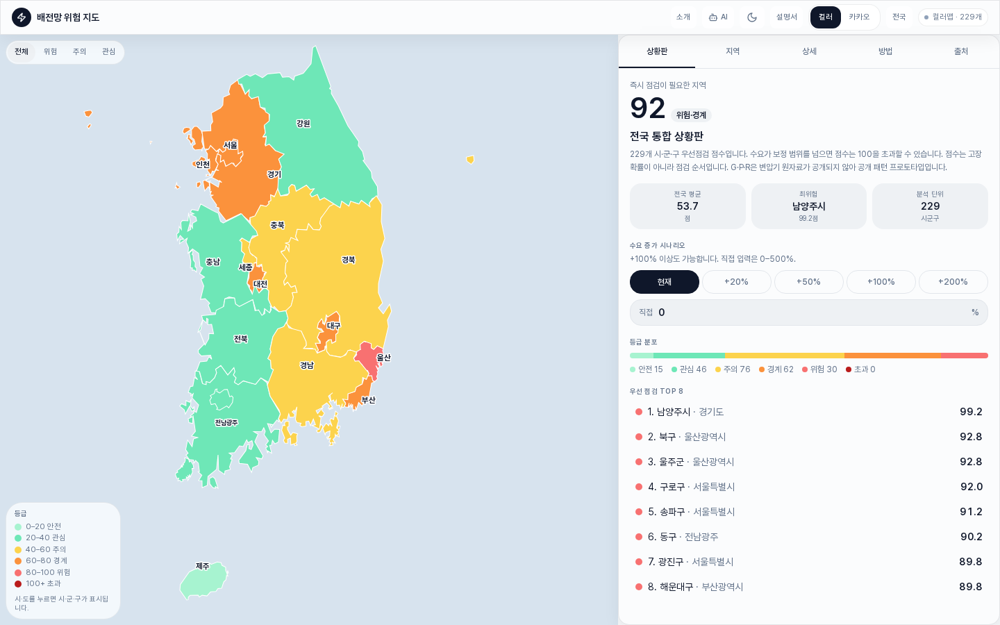
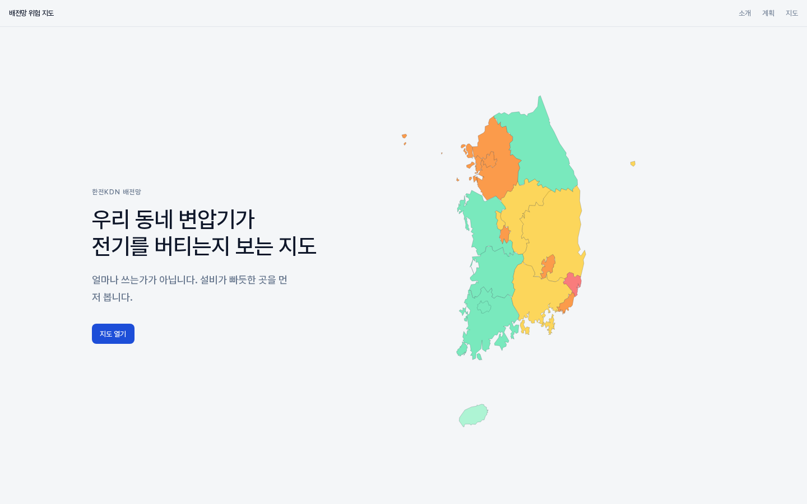
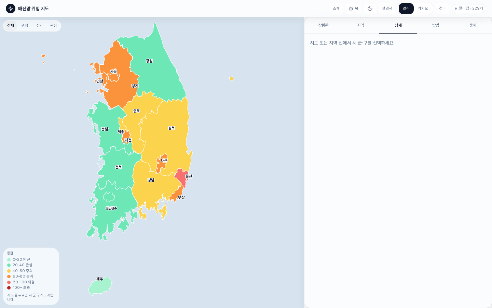
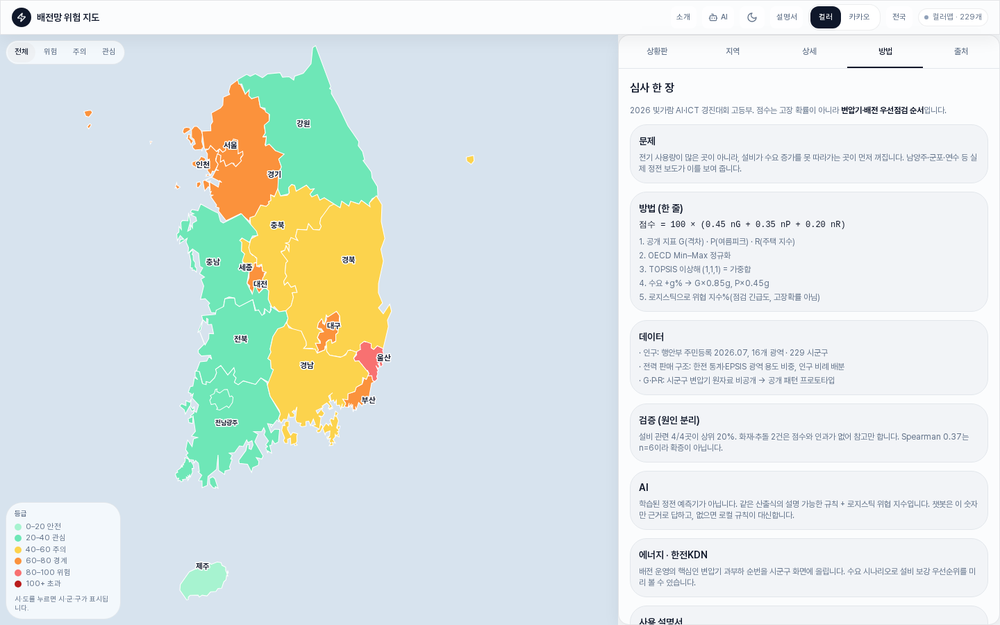

2026 빛가람 AI·ICT 경진대회 · 고등부 · 작품소개서
우리 동네 변압기가 전기를 얼마나 버틸 수 있는지 보는 지도
제출 형식: PDF · 분량: 20쪽 이내 · 블라인드 심사용
| 작품명 | 배전망 위험 지도 |
|---|---|
| 한 줄 정의 | 전기 사용량이 많은 곳이 아니라, 설비가 그 수요를 감당하는지 살핀다. |
| 분석 단위 | 광역 16곳(전남광주 통합) · 시·군·구 229곳 |
| 점수 식 | 100 × (0.45 nG + 0.35 nP + 0.20 nR) |
| 점수의 뜻 | 고장 확률이 아니라 우선 점검 순서 |
| 고객 | 한전KDN · 지방자치단체 |
배전망 위험 지도
부제: 우리 동네 변압기가 전기를 얼마나 버틸 수 있는지 보는 지도
수도관이 가늘면 물을 많이 쓰는 집이 아니어도 수압이 떨어집니다. 전기도 이와 같습니다. 전기를 많이 쓰는 도시가 위험한 것이 아니라, 변압기가 수요를 감당하기 빠듯한 동네가 위험합니다.
이 작품은 전국 시·군·구의 우선 점검 순서를 한 화면에 올려 주는 누리집입니다. 세 지표로 점수를 계산하고, 그 점수를 지도 색으로 보여 주며, 점수가 나온 이유를 한글로 풀어 줍니다. 처음에는 전국을 보고, 시·도를 고른 뒤, 시·군·구로 내려갑니다.
| 화면 | 하는 일 |
|---|---|
| 소개 | 질문과 방식, 앞날 계획을 읽습니다. |
| 전국 상황판 | 229곳의 평균, 가장 점수가 높은 곳, 등급 분포, 수요 시나리오를 봅니다. |
| 지도 | 기본은 색으로 칠한 한반도(컬러맵)입니다. 카카오맵 자바스크립트 키가 있으면 카카오맵으로 바꿉니다. |
| 상세 | 점수가 나온 이유와 인구, 산업 설명을 함께 봅니다. |
| 인공지능 | 같은 계산을 말로 읽어 줍니다. 없는 숫자는 지어내지 않습니다. |
| 방법 · 출처 | 산출 식과 뉴스, 통계의 원문 주소를 열어 둡니다. |
| 설명서 | 버튼을 누를 때마다 한 장씩 따라갑니다. 자동으로 넘어가지 않습니다. |
점수의 기본 구간은 0에서 100입니다. 수요를 크게 올리면 100을 넘을 수 있습니다. 100을 넘는다고 고장이 난다는 뜻이 아닙니다. 더 먼저 점검하라는 뜻입니다.

학생 작품은 “앞으로 전기를 얼마나 쓸까”를 맞히는 경우가 많습니다. 그러나 정전 보도를 보면, 큰 도시라는 이유만으로 불이 꺼지지는 않습니다. 아파트 변압기가 멈추거나, 여름에 냉방 수요가 한꺼번에 몰리거나, 차량이 전봇대를 들이받는 일이 겹칩니다. 문제는 집 가까운 배전 설비에서 시작됩니다.
한전KDN은 배전 정보화와 설비 안정을 다루는 회사입니다. 이 작품이 묻는 말도 같습니다. “이 설비가 지금 수요를 감당할 수 있는가.”
정전 보도 여섯 건을 모아 원인부터 나누었습니다. 화재나 추돌처럼 설비 과부하와 다른 사고와, 변압기·피뢰기 등 설비 관련 사고를 한 줄에 넣지 않았습니다.
| 지역 | 때 | 내용 | 이 작품에서의 구분 |
|---|---|---|---|
| 남양주 | 2025. 7. | 아파트 지하 주차장 화재, 약 370가구 정전 | 외부 원인. 점수 검증에 쓰지 않음 |
| 군포 | 2025. 8. | 버스가 변압기를 들이받음, 2,255세대 정전 | 외부 원인. 참고만 함 |
| 인천 연수 | 2026. 5. | 송도·동춘 일대 약 1,900세대 정전 | 설비 관련 |
| 인천 남동 | 2025. 7. | 아파트 약 1,200가구 정전, 승강기 갇힘 | 설비 관련 |
| 광주 동구 | 2023. 6. | 산수동 아파트 변압기 고장, 약 950세대 | 설비 관련 |
| 대구 달서 | 2025. 8. | 피뢰기 파손, 약 2,900세대 정전 | 설비 관련. 과부하와 같지는 않음 |
독창성은 지표를 많이 넣은 데 있지 않습니다. 질문 자체를 바꾼 데 있습니다.
| 비교 | 흔한 학생 작품 | 이 작품 |
|---|---|---|
| 질문 | 어디서 전기를 많이 쓰는가 | 그 전기를 변압기가 감당하는가 |
| 단위 | 전국 한 숫자, 또는 한 집 | 시·도에서 시·군·구 229곳으로 내려감 |
| 인공지능 | 결과를 맞히고 이유는 잘 보이지 않음 | 계산 과정을 한글로 풀어 주는 설명 가능한 인공지능 |
| 검증 | 뉴스에 난 정전을 모두 “맞혔다”고 셈 | 화재·추돌은 외부 원인으로 빼고, 설비 관련만 봄 |
| 데이터 | 없는 자료를 만들어 정확도를 씀 | 없는 숫자는 비움. 변압기 용량을 지어내면 거짓말이 됨 |
| 사업화 | 개인에게 앱을 팔겠다고 먼저 말함 | 한전KDN·지방자치단체 업무 화면. 일반 소비자용 앱이 아님 |
점수는 세 부분으로 나뉩니다. G는 수요가 설비보다 얼마나 빨리 늘었는지, P는 여름에 전력이 얼마나 몰리는지, R은 주택이 얼마나 모여 있는지를 나타냅니다.
참신하다고 말하는 까닭은 기능을 나열해서가 아니라, 아래 세 가지를 지켰기 때문입니다.
행정 구역 이름은 2026년 광주광역시와 전라남도 통합을 반영해 전남광주로 적었습니다. 배전 사업소 경계와 같다고 주장하지 않습니다. 주민 등록 인구 공표를 따른 표기입니다.

서버에 숨겨 둔 학습 모형은 없습니다. 자료와 계산식이 누리집 안에 있어, 심사하는 컴퓨터에서도 같은 점수가 나옵니다.
처리는 한 방향으로 흐릅니다.
지도는 두 가지입니다. 기본은 색으로 칠한 한반도(컬러맵)입니다. 카카오맵 자바스크립트 키와 웹 주소를 등록하면 실제 지도 위에 같은 점수가 올라갑니다. 키가 없어도 컬러맵이 남아 시연이 멈추지 않습니다.
| 구분 | 선택 | 이유 |
|---|---|---|
| 언어 | TypeScript | 식과 화면이 같은 파일을 보게 하려고 |
| 화면 | React | 지도와 표를 한 페이지에서 바꾸려고 |
| 지도 | 컬러맵과 카카오맵 | 키가 없어도, 키가 있어도 돌아가게 하려고 |
| 인공지능 | 규칙, 한글 설명, 대화 창 | 점수가 나온 이유를 말할 수 있어야 해서 |
0.45, 0.35, 0.20은 우리가 정한 시작값입니다. 전문가 설문으로 얻은 값이 아닙니다. 그래서 이 소개서에 정답 가중치라고 쓰지 않습니다. 나중에 지방자치단체나 계절에 맞게 숫자를 바꿀 수 있도록 세 칸으로 나누어 두었습니다.
최솟값과 최댓값으로 맞추는 방법은 여러 지표를 한 점수로 묶을 때 자주 씁니다. 참고 자료에 경제협력개발기구(OECD) 안내서를 적었습니다.
대회 이름에 인공지능이 들어 있습니다. 그래서 처음부터 무엇을 인공지능으로 할지 정했습니다.
전력망에서는 “왜 이 점수가 나왔는지”를 말해야 합니다. 이유를 모르는 예측은 사고가 났을 때 설명을 하지 못합니다. 우리는 학습으로 정전을 맞히는 모형 대신, 계산 과정을 사람이 읽게 만드는 설명 가능한 인공지능을 썼습니다.
대화 창은 같은 계산을 말로 읽어 줍니다. “남양주시가 위험한 이유”를 물으면 G·P·R과 순위를 말합니다. 없는 변압기 용량은 지어내지 않습니다.
처음 화면은 전국 상황판과 지도입니다. 위쪽 버튼으로 소개, 인공지능, 설명서, 밝기, 컬러맵과 카카오맵, 전국을 고릅니다.


| 화면 | 역할 |
|---|---|
| 상황판 | 전국에서 먼저 볼 곳, 등급, 수요 버튼(현재 · +20% · +50% · +100% · +200%) |
| 지역 | 광역 16곳을 고르고 시·군·구를 찾음 |
| 상세 | 고른 지역의 이유와 인구·산업 설명 |
| 방법 | 심사 요약, 산출 식, 사고 대조 |
| 출처 | 통계와 뉴스의 원문 주소 |
설명서는 사용자 설명서입니다. 첫째, 전국을 봅니다. 둘째, 한 곳을 엽니다. 셋째, 이유를 읽습니다. 넷째, 수요를 올려 봅니다. 다섯째, 방법과 출처를 엽니다. 한 장을 읽고 다음을 누릅니다.
| 단계 | 때 | 한 일 | 상태 |
|---|---|---|---|
| 1. 질문 정하기 | 2026. 7.~8. | 설비 중심으로 질문을 바꾸고 보도를 모음 | 완료 |
| 2. 지도 만들기 | 2026. 8.~9. | 229곳 지도, 시나리오, 상세, 출처 | 완료 |
| 3. 설명과 시연 | 2026. 9. | 설명 인공지능, 대화 창, 설명서, 소개 화면 | 완료 |
| 4. 서류 | 2026. 9. | 이 소개서, 화면 갈무리 | 진행 |
| 5. 공개 통계 연결 | 이후 | 한전 시·군·구 월간 판매량을 식에 직접 연결 | 예정 |
| 6. 실제 변압기 값 | 자료가 열리면 | 같은 지도에 용량과 부하율을 넣음 | 아직 못 함 |
누리집은 지금 바로 돌아갑니다. 변압기 원자료를 넣는 일은 진행하지 않았습니다. 그 숫자를 만들면 거짓말이 되므로 만들지 않았습니다.
| 문제 | 영향 | 대응 |
|---|---|---|
| 시·군·구 변압기 용량이 공개되어 있지 않음 | 점수가 실측값이 아님 | 시험판이라고 화면에 밝힘. 나중에 같은 칸에 실제 값을 넣도록 칸만 둠 |
| 산업용 전력을 인구에 비례해 나눔 | 공장이 많은 곳이 덜 위험하게 보일 수 있음 | 상세 화면에서 배분값이라고 밝힘 |
| 정전 보도가 6건뿐임 | 통계로 말하기에는 너무 적음 | 맞힌 비율이라고 쓰지 않음. 원인부터 나눔 |
| 가중치를 우리가 정함 | 정답이 아님 | 시작값이라고 씀. 세 칸으로 나누어 나중에 바꿀 수 있음 |
| 카카오맵 키가 없을 수 있음 | 실제 지도가 뜨지 않음 | 컬러맵을 기본으로 두고, 버튼으로 고르게 함 |
수요 증가가 0%일 때 누리집에 나오는 순위입니다. 229곳 기준입니다.
| 지역 | 원인 | 점수 | 순위 | 상위 |
|---|---|---|---|---|
| 남양주시 | 외부(화재) | 99.2 | 1 | 0.4% |
| 광주 동구 | 설비 | 90.2 | 6 | 2.6% |
| 군포시 | 외부(추돌) | 87.5 | 11 | 4.8% |
| 대구 달서구 | 설비 | 84.5 | 14 | 6.1% |
| 인천 연수구 | 설비 | 81.5 | 24 | 10.5% |
| 인천 남동구 | 설비 | 79.3 | 33 | 14.4% |
설비 관련 네 곳은 모두 상위 20% 안에 있었습니다. 그렇다고 우리 점수가 정전을 맞힌다고 쓰지 않습니다. 표본이 6건이라 통계라고 부르기 어렵고, 남양주와 군포는 화재와 추돌이라 식과 인과가 없습니다.
이 표가 말하는 바는 하나입니다. 설비가 언급된 지역이 우리 지도에서 앞쪽에 보였다는 점입니다. 보도가 더 모이면 그때 다시 세겠습니다.
이 작품의 고객은 일반 소비자가 아닙니다. 한전KDN과 지방자치단체입니다. 개인용 앱 장터에 올려 구독료를 받는 상품이 아니라, 배전 순시와 과부하 우선 순위를 한 화면에 올리는 업무용 화면입니다.
| 누구 | 무엇을 쓰는가 | 왜 필요한가 |
|---|---|---|
| 한전KDN | 배전 우선 점검 지도. 이후 배전자동화·관제 화면 옆 모듈 | 현장 순시 순서를 시·군·구로 먼저 고를 수 있음 |
| 지방자치단체 | 우리 지역 설비 상태를 한 장으로 보는 현황판 | 민원과 여름 전력 수요가 몰릴 때 어디를 볼지 설명하기 쉬움 |
| 학교·대회 시연 | 지금 공개 누리집 | 고객에게 보여 주기 전에 동작을 증명하는 시연본 |
수익은 개인 결제에서 나오지 않습니다. 아래 둘 가운데 하나입니다.
매출을 억 원 단위로 적지 않습니다. 변압기 원자료가 없는데 견적을 쓰면 거짓말이 됩니다. 사업 경로는 있습니다. 누구에게, 어떤 화면으로 들어가는지를 정해 둔 것입니다.
| 단계 | 산출물 | 조건 |
|---|---|---|
| 1. 지금 | 공개 시험판. 순위, 수요 시나리오, 설명 인공지능 | 공개 통계만 사용. 시연과 설명회용 |
| 2. 다음 | 공공 자료 연결본. 한전 시·군·구 월간 판매량을 식에 직접 연결 | 화면은 그대로 두고 지방자치단체 설명에 쓸 수 있음 |
| 3. 운영 | 변압기 용량과 부하율을 같은 칸에 넣은 운영 화면 | 한전·한전KDN 내부 자료가 열릴 때. 배전자동화 화면 옆 지도 |
한전 내부 운영 시스템을 지금 당장 대신한다고 쓰지 않습니다. 우리가 만든 것은, 그 숫자가 들어오는 순간 같은 지도에 올라가는 화면 틀입니다. 사업화의 핵심은 개인용 앱이 아니라 이 화면을 배전 업무에 붙이는 일입니다.
대상은 송전이 아니라 집 앞 변압기입니다. 한전KDN이 매일 하는 일, 곧 배전 점검과 과부하, 여름 전력 수요 관리와 질문이 같습니다.
| 적용 지점 | 이 작품이 보여 주는 것 |
|---|---|
| 배전 순시 | 시·군·구 우선 목록 |
| 지방자치단체 설명 | 우리 지역 설비 상태를 한 장으로 보여 줌 |
| 변압기 증설 검토 | 수요 격차가 큰 곳과 여름 수요가 큰 곳을 나눔 |
| 여름 전력 수요 | P가 큰 곳을 색으로 표시 |
| 수업 · 시연 | 식과 출처가 화면에 있어 속을 열어 보여 줌 |
탄소를 몇 톤 줄인다고 적지 않았습니다. 그 숫자를 이 시험판에서 재면 거짓말이 됩니다.
지금 셀 수 있는 것만 적습니다.
| 항목 | 값 | 뜻 |
|---|---|---|
| 한 화면에 올린 단위 | 시·군·구 229곳 | 표 대신 지도 순서 |
| 수요 가정 | 0~200% 버튼, 직접 입력 0~500% | 같은 식으로 다시 계산 |
| 보도 대조 | 6건(설비 관련 4, 외부 원인 2) | 화재와 추돌을 적중으로 치지 않음 |
| 출처 | 행정안전부, 한전, 전력 거래소, 뉴스 주소 | 다시 열어 볼 수 있음 |
| 시연 | 설명서 5장 | 발표에서 함께 누름 |
본문에 나온 공개 자료입니다. 누리집 출처 화면과 같습니다.
점수는 고장 확률이 아닙니다. 시·군·구 변압기 실제 용량은 공개되어 있지 않아, 그 구간의 값은 시험판입니다.